Breaking Bad es una aclamada serie de televisión estadounidense creada y producida por Vince Gilligan, que se estrenó el a través de la cadena AMC. Desde su primer episodio, la historia propone una premisa tan simple como inquietante: ¿qué haría una persona común si se viera empujada al límite? A partir de esa pregunta, la serie construye un relato intenso y progresivo sobre la transformación de su protagonista, Walter White, un profesor de química cuya vida cambia radicalmente tras recibir un diagnóstico de cáncer terminal.
A lo largo de sus temporadas, la serie explora con profundidad la evolución moral de su protagonista, mostrando cómo decisiones aparentemente justificables pueden derivar en consecuencias cada vez más oscuras. Concebida por Gilligan con la idea de convertir a un hombre común en un antihéroe, la narrativa se apoya en una construcción psicológica compleja, donde el poder, la ambición y la supervivencia redefinen constantemente los límites entre el bien y el mal. El resultado es una historia atrapante que no sólo redefinió el género dramático televisivo, sino que también dejó una huella duradera en la cultura popular por su intensidad narrativa y desarrollo de personajes.
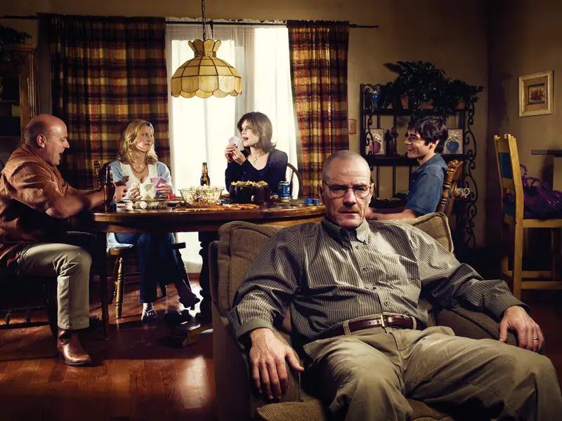
Walter White, un profesor de química con una vida familiar aparentemente tranquila.
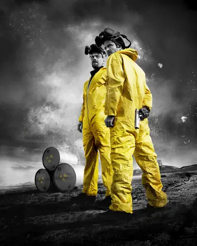
Ficha técnica
Año
–
Temporadas
5
Episodios
62
Creador
Vince Gilligan
Género
Drama, crimen
De la televisión por cable al fenómeno global del streaming.
Historia de transmisión
La historia de transmisión de Breaking Bad es, en muchos sentidos, tan interesante como la propia serie. Su estreno en por la cadena AMC no fue inicialmente un fenómeno masivo, e incluso su primera temporada se vio afectada por la huelga de guionistas de Hollywood, lo que redujo la cantidad de episodios producidos. A pesar de esto, la serie comenzó a construir lentamente una base de seguidores gracias al boca a boca y a una narrativa cada vez más intensa, consolidándose como una propuesta diferente dentro de la televisión por cable.
Uno de los momentos más críticos en su historia llegó alrededor de la tercera temporada, cuando AMC consideró cancelar la serie. Ante esta incertidumbre, la productora Sony Pictures Television evaluó venderla a otras cadenas, lo que generó negociaciones clave para su continuidad. Finalmente, AMC decidió renovarla, pero este episodio marcó un punto de inflexión: Breaking Bad pasó de ser una serie en riesgo a convertirse en una apuesta estratégica.
El verdadero impulso llegó con un cambio en el modelo de consumo: la incorporación de la serie al catálogo de Netflix. Este acuerdo permitió que nuevos espectadores descubrieran la historia desde el inicio y la vieran de forma maratónica, lo que provocó un crecimiento exponencial en su audiencia. De hecho, el estreno de la quinta temporada duplicó la cantidad de espectadores respecto a temporadas anteriores, demostrando el impacto directo del streaming en su popularidad.
A nivel narrativo, la serie también fue marcando hitos con episodios clave y decisiones estructurales importantes, como dividir su quinta y última temporada en dos partes ( y ), aumentando la expectativa del público y transformando su final en un verdadero evento televisivo. El episodio final, emitido en , alcanzó más de 10 millones de espectadores, consolidando a Breaking Bad como uno de los mayores fenómenos culturales de la televisión moderna.
En retrospectiva, la trayectoria de la serie refleja una evolución clave en la industria: pasó de depender exclusivamente de la televisión tradicional a convertirse en un éxito global impulsado por el streaming, redefiniendo cómo las audiencias descubren y consumen contenido.
Personajes
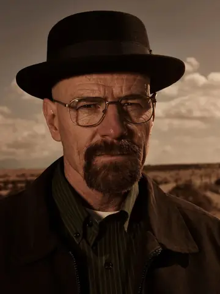
Walter White
Interpretado por Bryan Cranston
Profesor de química que se vuelve narcotraficante, protagonista central y anti-héroe trágico. Su arco narrativo sigue su descenso moral: comienza cocinando metanfetamina para pagar su cáncer y termina como un criminal despiadado, Heisenberg, alejándose de su familia.
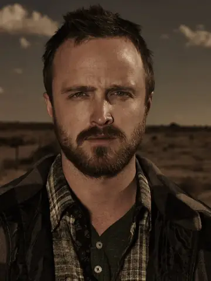
Jesse Pinkman
Interpretado por Aaron Paul
Joven socio de Walt y coprotagonista cuyo arco va de criminal despreocupado a víctima culpable. Su inocencia y conflicto moral sirven de contrapunto al de Walter.
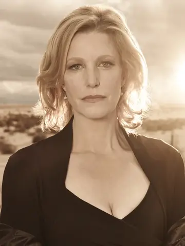
Skyler White
Interpretada por Anna Gunn
Esposa de Walt, figura de moralidad familiar. Actúa como la contraparte ética de Walt; su arco va de esposa preocupada a cómplice forzada, luchando por proteger a su familia mientras enfrenta la criminalidad de su marido.
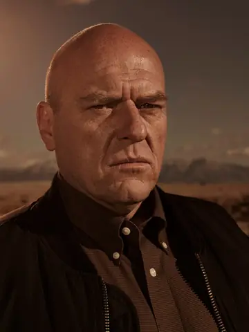
Hank Schrader
Interpretado por Dean Norris
Agente de la DEA y cuñado de Walt. Representa la ley y la justicia. Funciona como antagonista dramático involuntario: su cacería de Heisenberg provee tensión permanente.
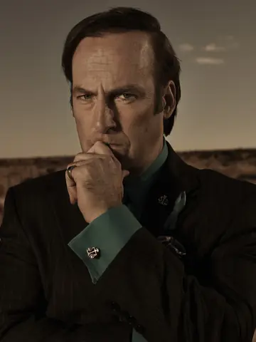
Saul Goodman
Interpretado por Bob Odenkirk
El abogado colorido y oportunista que sirve de alivio cómico y puente entre legales y criminales. Actúa como facilitador del mundo subterráneo: consigue contactos, blanquea dinero y encuentra soluciones legales (o no) para Walt y Jesse.
Capítulos destacados
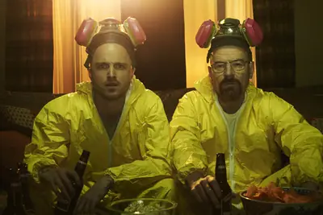
Pilot
Temporada 1, Episodio 1
El episodio piloto marca el inicio de toda la historia y presenta la transformación inicial de Walter White. Tras recibir su diagnóstico de cáncer, Walter toma la decisión de entrar al mundo del narcotráfico junto a Jesse Pinkman. Este capítulo establece el tono de la serie y plantea el conflicto central: la lucha entre la moralidad y la supervivencia, mostrando el primer paso hacia su alter ego, Heisenberg.
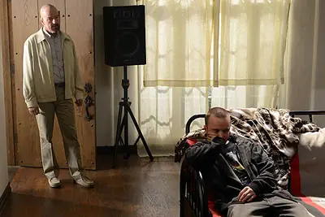
Grilled
Temporada 2, Episodio 2
En este intenso episodio, Walter y Jesse son capturados por Tuco Salamanca, uno de los primeros grandes antagonistas de la serie. La tensión psicológica domina toda la narrativa, mientras Walter comienza a demostrar su capacidad de manipulación y sangre fría para salir de situaciones extremas. Este capítulo consolida el crecimiento del personaje y eleva el nivel de peligro en la historia.
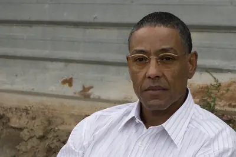
Face Off
Temporada 4, Episodio 13
El final de la cuarta temporada presenta uno de los enfrentamientos más icónicos de la serie: Walter White contra Gus Fring. Este episodio representa un punto de quiebre definitivo, donde Walter demuestra hasta dónde está dispuesto a llegar para ganar poder. La resolución es impactante y marca la consolidación de Walter como una figura dominante dentro del mundo criminal.
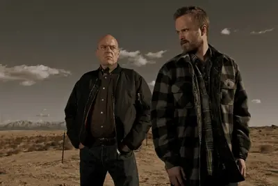
Ozymandias
Temporada 5, Episodio 14
Considerado uno de los mejores episodios de la televisión, este capítulo muestra la caída total de Walter White. Las consecuencias de sus decisiones alcanzan su punto máximo, afectando tanto a su familia como a sus aliados. Es un episodio emocionalmente devastador que funciona como el clímax de toda la serie, evidenciando el costo real de su transformación.
Videos
La esencia de la serie es la transformación de Walter White, su compleja relación con Jesse Pinkman y la tensión constante que define su historia. A través de estos contenidos, vas a poder entender tanto la evolución de los personajes como los puntos más intensos de la trama.
Ascenso y caída de Walter White
Resumen del ascenso y caída de Walter White, ideal para entender toda la serie rápidamente.
Las cinco temporadas
Video que repasa las 5 temporadas y los momentos clave de la historia.
Contacto
Sumate al club de fans de Breaking Bad: completá el formulario y recibí novedades, maratones organizadas por la comunidad y debates sobre cada temporada. Si tenés una teoría sobre Heisenberg, contanos en el comentario.